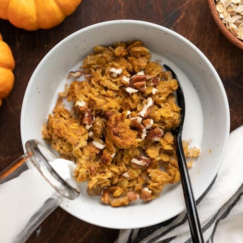

Baked Oatmeal

Description
This delicious oatmeal comes together quickly and easily and tastes great. You can definitely make this as described, or you can swap out the pumpkin for another ingredient to change up the flavor! We often swap the pumpkin out for a few cups of frozen berries that we cook on the stove for a few minutes.
Ingredients
- 1 15 oz. can pumpkin puree
- 1/2 cup brown sugar
- 2 large eggs
- 1/2 Tbsp pumpkin pie spice
- 1/2 tsp vanilla extract
- 1/4 tsp salt
- 3/4 tsp baking powder
- 1 1/2 cups milk
- 2 1/2 cups old fashioned rolled oats
Directions
- Preheat the oven to 375ºF. In a large bowl, whisk together the pumpkin purée, brown sugar, eggs, vanilla, pumpkin pie spice, salt, and baking powder until smooth.
- Add the milk and whisk until smooth again.
- Stir the dry oats into the pumpkin mixture.
- Pour the oats into an 8×8-inch baking dish.
- Bake the oats in the preheated oven for 45 minutes, or until the center no longer looks wet and the edges are lightly golden brown.
- Serve hot right out of the oven or refrigerate until ready to serve. The baked oats can be eaten cold or reheated. Top with milk, maple syrup, whipped cream, or nuts if desired.